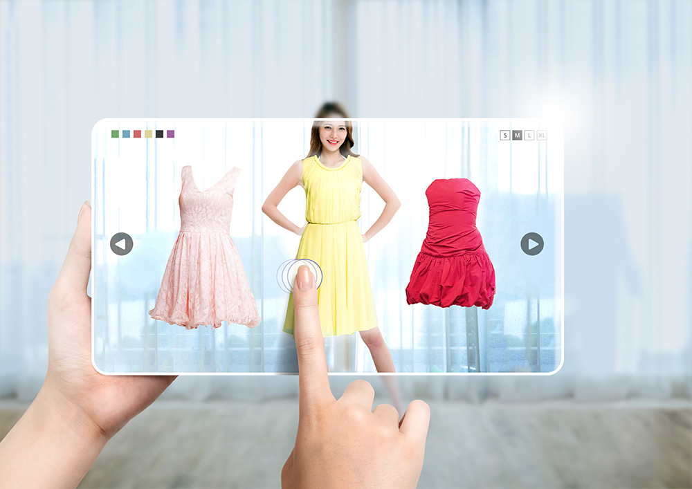

The global pandemic crisis has impacted almost all industries and the retail sector has been no exception. However, the market has been resilient in its approach and has been devising new strategies in order to cope with the ever-evolving situations and social distancing norms. With the industry dynamics and the shift in consumer behavior, the sector is making concerted efforts to survive and thrive. While the pandemic pushed the need for online shopping, the retail sector is resorting to technological adoption in order to fulfill the rising demands of consumers.
Augmented Reality Paving the Way for the Digital Transformation of the Retail Industry
Customer experience is an important element of the retail industry. Leveraging the power of technology, the players are aiming to offer convenience and personalization to the consumers as per their needs. Amongst the plethora of technologies available, Augmented Reality is emerging to be a game-changer solution for the retail industry. Immersive technologies especially AR is bringing about major digital transformations in the operations of the retail sector. This new-age technology is revamping the market and is making it digital-ready for the future. Augmented Reality has altered the way businesses interact with consumers. They are now relying on the power of AR so as to cope with the diverse and evolving needs of the consumers as well as the industry dynamics. Have a glimpse at some of the major benefits of this advanced technology that pushes the retailers to adopt it in their operations:-
Convenience at the Fingertips
While shopping online, one can browse through various products but unfortunately can’t try them out! AR on the other hand enables the customers to virtually try the products. Imagine the comfort and the convenience of trying the products in the digital space right from the comfort zone of your homes. This helps you to choose the right and the best piece as per your requirement and preference. The technology of AR makes the shopping experience easy, convenient and appealing for consumers. Eventually, it helps retailers in boosting their sales by offering a virtual trial of their offerings to the customers at their fingertips.
Personalization is the Key
Using AR, retailers offer the customers an engaging and interactive shopping experience via visually simulated content such as AR overlays. This enables them to make better and well-informed purchasing decisions. Offering personalization also ensures that they don’t just buy the product but makes them come back all the more. This further leads to building a loyal customer base and trust amongst the consumers.
Enjoying a Competitive Edge
Augmented Reality has helped bridge the gap between in-store and online shopping experiences. Via AR, retailers will be able to offer state-of-the-art and tech-savvy online experiences to the customers. Hence, they are well aware that this new-age technology will provide them a competitive edge in the market by enhancing their offerings and improving customer purchasing experiences.
AR-enabled Solutions Revamping the Retail Sector
AR offers the added advantage of helping customers visualize how the particular product will fit and look in their homes. Be it the architecture, paints, furnishings, or even décor, AR offers retailers an opportunity to extend upscaled services of 3D virtual representation and trial of products in the homes of the customers. The usage of AR is not just limited to the essentials but also extends to fashion and beauty verticals as well. One such instance of this is the AR-enabled virtual trial of makeup products by using camera and facial recognition features.
Summing Up!
TOptimally utilizing the power of AR keeping into consideration your offerings and target customer base is becoming the dire need of the hour. The retailers were prompt enough to embrace tech adoption during the pandemic as it would help them reach one step closer to their aim of enhancing the customer experience. Augmented Reality has emerged as an effective and viable tech solution as it helps offer personalized and convenient shopping experiences. It has revolutionized the retail sector and owing to AR empowerment, the future of the retail market indeed seems promising.